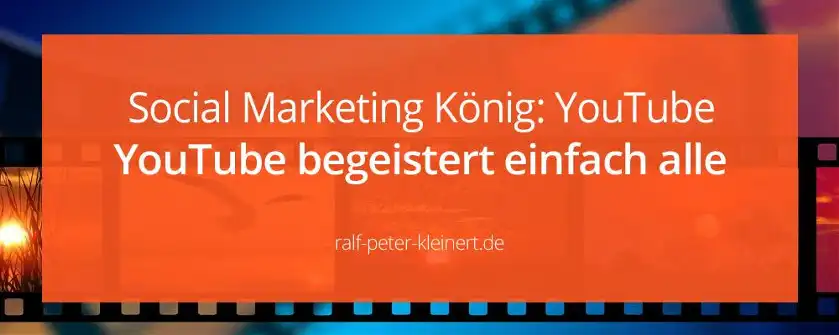

Die zweitgröße Suchmaschine der Welt – YouTube Video Marketing ist die Zukunft
Es gibt unheimlich viele verschiedene Social Networks die du als Social Media Manager verwenden kannst, aber das YouTube Video Marketing empfehle ich dir unbedingt – der Nutzerzahlen wegen. Bist du noch nicht im Beruf angekommen empfehle ich dir, die wichtigsten Informationen für werdende Social Media Manager ins Auge zu fassen und erst dann die Entscheidung zu treffen, alle diese Themen durchzugehen. Einige Networks sind eigentlich unverzichtbar, aber deine Aufgabe ist es, die richtigen Netzwerke zu finden und zu nutzen. Es muss nicht immer das Netzwerk sein, dass einem zuerst in den Sinn kommt. Normalerweise entscheidet sich ein Unternehmen anhand der Zielgruppe für das richtige Network, manchmal kommen dann aber noch persönliche Vorlieben hinzu.
Es gibt spezielle Networks wie Instagram, das eher junge Leute anspricht oder Networks wie LinkedIn was wiederum auf berufstätige Menschen ab 30 ausgerichtet ist. Und es gibt auch Networks, die allgemein einsetzbar sind, wie YouTube.
Meine persönliche Meinung zum Video Marketing mit YouTube und zur Plattform allgemein
Ich selbst habe YouTube zu meinem persönlichen Social Media Management Liebling auserkoren, weil ich glaube, dass hier das größte Potenzial in jede Richtung vorhanden ist. Es gibt immer für und wider, deshalb schreibe ich ja: Ich finde, dass YouTube das meiste Potenzial hat. Mir macht es auch am meisten Spaß, wenn ich ehrlich bin. Ein Video zu produzieren, ist eine tolle Aufgabe. Warum sehe ich hier noch das größte Potenzial? Weil die Menschen auf YouTube gehen, um sich von Videos berieseln zu lassen. Bei Insta müssen die Leute ständig Posten, Scrollen und Liken und bei Facebook Posten, Scrollen und Schreiben.
Was machen die Leute bei YouTube? Scrollen, Play drücken und eine Weile nichts tun, nur Video gucken. Aber wenn sie wollen können sie dennoch Posten, Liken und Schreiben. Die menschliche Faulheit wird bei YouTube ganz besonders bedient. Wenn du als Creator nun schlau deinen Content erstellst – ist hier ein wirklich riesiges Potenzial. Für mich sind das sehr gute Argumente. Aber das coolste ist, dass alle anderen Portale YouTube Videos anzeigen. Das sind gigantische Möglichkeiten. YouTube ist der Knaller.
Einige interessante Fakten, Zahlen und Statistiken rund um YouTube
- 14.02.2005: www.YouTube.com geht online
- 23.08.2005: das erste Video Me at the Zoo wird hochgeladen
- 09.10.2005: Google kauft YouTube für 1,65 Mrd. US-Dollar
- August 2007: Werbeanzeigen werden gestartet
- März 2013: monatlich 1 Mrd. aktive Nutzer
- 7 von 10 Menschen sehen Videos im Netz, statt Fernsehen zu schauen
- 80 % der 18-49 jährigen schauen YouTube Videos
- YouTube erreicht mehr Menschen als Nachrichtensender und Kabel-TV
- 2 größte Suchmaschine nach Google
- 2 meist genutzte Website nach Google
- täglich spielt YouTube 1 Mrd. Stunden Video aus
- über 70 % der YouTube Videos werden auf Mobil-Geräten gesehen
- die Menschen sind täglich im Durchschnitt 40 Minuten auf YouTube
- YouTube Video Marketing macht den Hauptumsatz des Unternehmens aus
Wenn du diese Zahlen in den Grundzügen kennst, kannst du erahnen welche Möglichkeiten hier für dich als Social Media Manager bestehen. Klar, oder? Jetzt kommt aber der Haken. Für YouTube brauchst du Videos. Texte und Fotos gehen nur begrenzt unter dem Community Tab ab 1000 Abonnenten. Aber YouTube User wollen Videos und dann auch noch gute, unterhaltsame Videos. Das Drehen und Produzieren der Videos, die Thumbnails und die Videotexte sowie das Posten und die Communityarbeit nehmen dich zu 100 % ein und als Social Media Manager alle großen Portale voll zu bedienen wird deshalb nicht möglich sein.
Klaro kannst du in allen großen Netzwerken aktiv sein. Aber ich denke nicht, dass du dich dann um den Menschen richtig kümmern kannst. Ich kann bei Bedarf alle Networks bedienen, doch wenn ich die Wahl habe gehe ich zu YouTube.
Mit diesem Video-Network kannst du viel mehr, als nur Videos zeigen
Wenn du als Social Media Manager startest, hast du oft nicht die Wahl, wenn es um die Networks geht. Doch irgendwann wirst du Erfahrung haben und ein Kunde wird dann vielleicht fragen, welches Network du empfiehlst, dann kommst du erst mal zu den Analysen. Du schaust dir an, welches Produkt an den Mann gebracht werden soll, und ermittelst, wo die Zielgruppe zu finden ist. Dann kannst du den Kunden beraten was deiner Meinung nach von Vorteil wäre. Diese Meinung muss aber fundiert sein, mit Zahlen belegbar und nicht nur nach deinem Geschmack.
Denn, auch wenn ich selbst YouTube bevorzuge, ist die Plattform nicht immer die letzte Wahl.
Google und YouTube sind ein starkes Team im Video Marketing, das stärkste sogar
Dann möchte ich noch Google Analytics und YouTube Analytics erwähnen. Diese Analysetools sind in YouTube enthalten. Ich nutze sie am PC und auch im YouTube Studio auf dem Handy. Die App habe ich dir mal verlinkt und du kannst sie direkt auf dem Handy installieren. Tolle App, wenn du bei YouTube bist. Damit lässt sich ganz genau beobachten was die Videos und die User damit machen. Und zuletzt kommt dann noch Google Ads, ehemals Adwords zur Sprache. Damit kannst du eine Social Media Kampagne hoch effektiv platzieren.
Ein richtig geiles Video läuft viral und ein gutes Video auch mit stundenlanger Kommentararbeit und Community-Betreuung, aber zur Not holst du Google Ads raus, um das Video zu verbreiten. So!